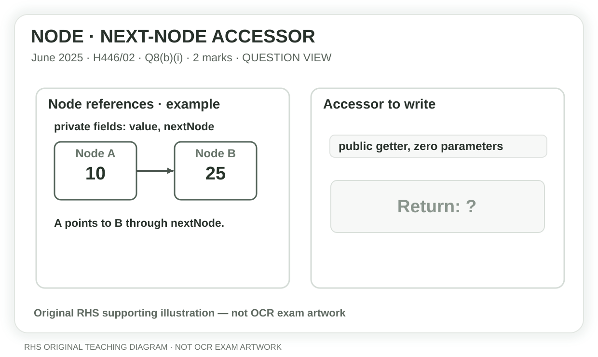
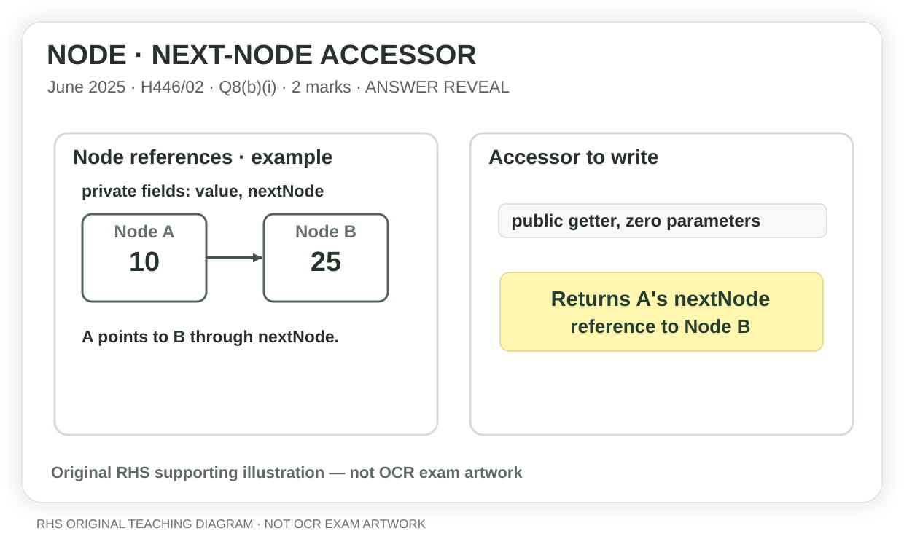
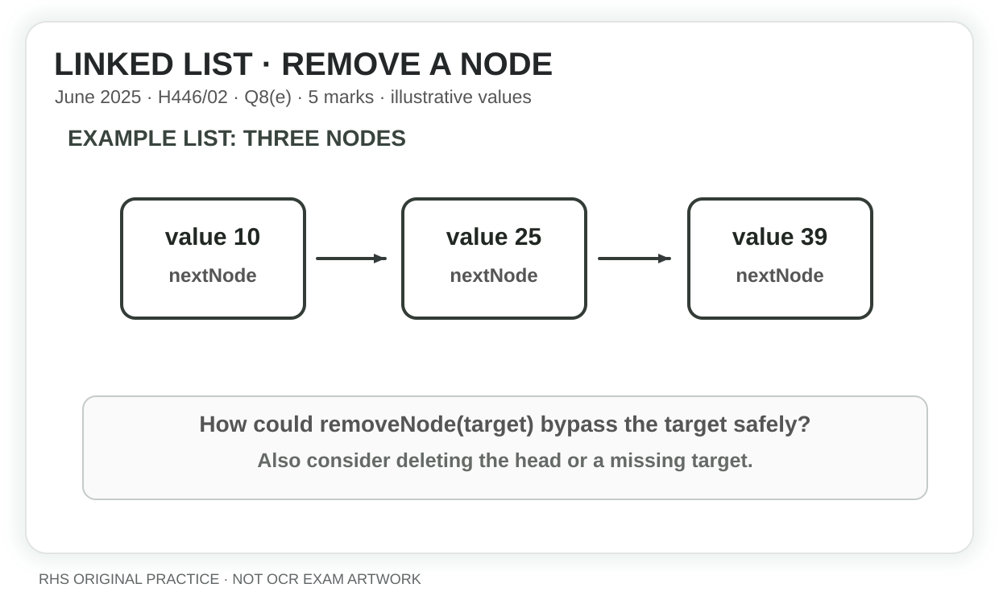
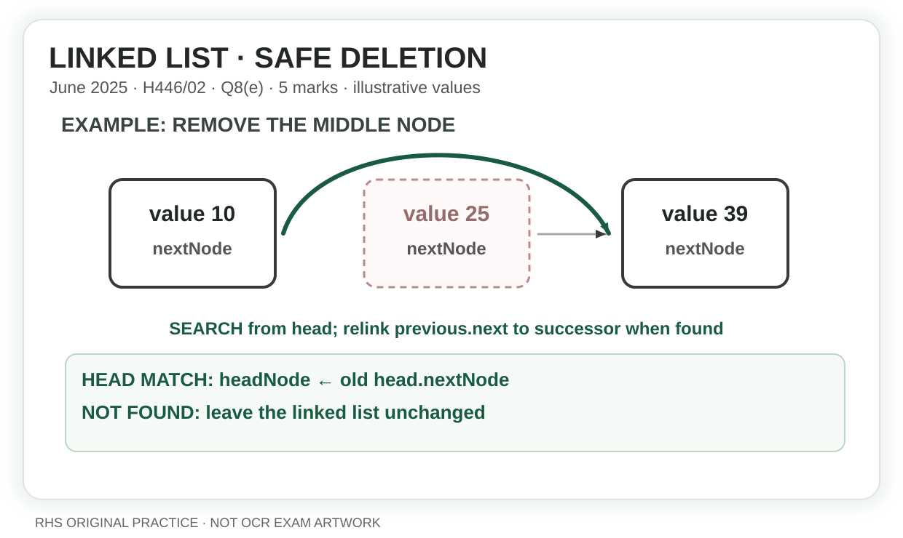

What makes a heuristic admissible?
What does a partition do to the pivot?
What does the head reference identify?
Why must a new node's Next be set before replacing an existing Next link?
Retrieval
What makes a heuristic admissible?
It never overestimates the true cheapest remaining cost.
Retrieval
What does a partition do to the pivot?
Places it at its final index with smaller/equal values to its left.
Retrieval
What does the head reference identify?
The first node in a linked list.
Retrieval
Why must a new node's Next be set before replacing an existing Next link?
Otherwise the original successor can become unreachable and part of the list may be lost.
Linked lists using objects
By the end, you can…- Construct a singly linked list using C# node references
- Insert a node without losing the remaining list
- Trace head and next references, including null
Key vocabulary
nodeheadNextnulltraversal
NEW LEARNING · CODE FIRST
Study the code and predict the state
// C# top-level statements appear before the class.
Node head = new(10,new(20,new(30)));
Node inserted = new(15,head.Next);
head.Next = inserted; // 10 → 15 → 20 → 30
class Node {
public int Value;
public Node? Next;
public Node(int value, Node? next=null) {
Value=value; Next=next;
}
}STEP 1 OF 3
Build a chain
Each Node stores a Value and a Next reference; the final Next is null.
STEP 2 OF 3
Preserve the successor
Construct 15 with Next set to the old 20 node *before* changing 10.Next.
STEP 3 OF 3
Finish the insertion
Set 10.Next to 15. Now traversal yields 10→15→20→30.
I DO · TEACHER MODEL
Insert node 7 between 4 and 9 in 4 → 9 → 12.
Node newNode = new(7, node4.Next);
node4.Next = newNode;STEP 1 OF 2
Predict first
Set newNode.Next to the existing successor 9.
STEP 2 OF 2
Model the reasoning
Update node4.Next to reference the new 7 node. The 9→12 remainder is preserved.
WE DO · DIFFERENT GUIDED PROBLEM
Insert 6 after node 2 in 2 → 8 → 11.
Node newNode = new(6, node2.Next);
node2.Next = newNode;STEP 1 OF 2
Predict first
First give the new node a reference to 8, the former successor of 2.
STEP 2 OF 2
Model the reasoning
Then change node2.Next to reference 6; the final chain is 2→6→8→11.
Foundation · 3 marks · QUESTION 1 OF 3
For 3→5→8, identify head, 5.Next.Value and 8.Next.
WORKED ANSWER
[3] Head is the node containing 3 [1]; 5.Next.Value is 8 [1]; 8.Next is null [1].
Core · 5 marks · QUESTION 2 OF 3
Write two C# statements to insert a node with value 12 after node8 in 8→20→30. Give the new traversal.
WORKED ANSWER
[5] Node inserted = new(12,node8.Next); [2]; node8.Next = inserted; [1]; 8→12→20→30 [2].
Stretch · 6 marks · QUESTION 3 OF 3
Describe how to delete node 20 from 10→20→30 if you hold a reference to node10. Explain the complexity of reaching the deletion point and changing the link.
WORKED ANSWER
[6] Set node10.Next=node10.Next!.Next [2] to bypass 20 [1], leaving 10→30 [1]; finding node10 from head may take O(n) [1], but changing the link once identified is O(1) [1].
UNAPPROVED TEACHER PREVIEW · ADDITIONAL EXAM PRACTICE 1 OF 2 · 2 MARKS

Node accessor · 2 marks
A library kiosk uses an original object-oriented singly linked list. Each Node stores: private value: integer private nextNode: Node reference (possibly null) An existing public getValue() method returns value. The methods that get or set other fields are to be written below.
Write a public accessor function getNextNode() with no parameters that returns the existing nextNode attribute. [2]
OCR H446/02 · June 2025 · Q8(b)(i) · RHS original scenario · Teacher draft
MODEL ANSWER · 2 MARKS

public function getNextNode() return nextNode endfunction
Marking: One mark for the zero-parameter accessor header getNextNode; one for returning the correct class attribute nextNode, not a new local value.
UNAPPROVED TEACHER PREVIEW · ADDITIONAL EXAM PRACTICE 2 OF 2 · 5 MARKS

Safe linked-list deletion · 5 marks
The library kiosk also has a linkedList class containing a private headNode reference. Its public insertNode(value) method is already implemented: it appends the new node to the end of the list. A new linkedList has no nodes until one is inserted. The Node class has public getValue() and getNextNode() accessors, and a public setNextNode(newNext) mutator. The linkedList class can update its own private headNode attribute.
A new removeNode(target) method must delete the first node holding a requested integer. Assume that target occurs at most once. Describe an algorithm that searches for the node and updates links safely. Your algorithm must also work if the target is in the head node or is not present. [5]
OCR H446/02 · June 2025 · Q8(e) · RHS original scenario · Teacher draft
MODEL ANSWER · 5 MARKS

Begin at headNode and keep a previous reference (initially null). Compare the current node value against target, advancing to current.nextNode until a match or null. If not found, leave the list unchanged. If found at head, replace headNode with the node's next reference; otherwise call previous.setNextNode(current.getNextNode()). This bypasses the removed node without breaking the rest of the list.
Marking: Five distinct marks: start from head; compare each value with target; follow next pointers until found or end; relink the previous node to the deleted node's successor; correctly handle head deletion or missing target. Source mark scheme emphasises the linked-list traversal and re-linking.
node
An object containing data and a reference to another node.
head
Reference to the first node.
Next
Link to the successor node.
null
No object is referenced.
traversal
Visit nodes successively by following Next references.
True or false?
Inserting a linked-list node always requires shifting the stored values of later nodes.
Model answer
False. Insertion changes references; later node values do not need shifting.
Confidence check
Name one concept you can now apply and one you still need to practise.